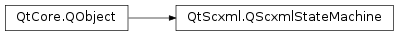

QScxmlStateMachine¶
Synopsis¶
Functions¶
- def
activeStateNames([compress=true]) - def
cancelDelayedEvent(sendId) - def
connectToEvent(scxmlEventSpec, receiver, method[, type=Qt.AutoConnection]) - def
connectToState(scxmlStateName, receiver, method[, type=Qt.AutoConnection]) - def
initialValues() - def
invokedServices() - def
isActive(scxmlStateName) - def
isActive(stateIndex) - def
isDispatchableTarget(target) - def
isInitialized() - def
isInvoked() - def
isRunning() - def
loader() - def
name() - def
parseErrors() - def
sessionId() - def
setInitialValues(initialValues) - def
setLoader(loader) - def
setRunning(running) - def
setTableData(tableData) - def
stateNames([compress=true]) - def
submitEvent(event) - def
submitEvent(eventName) - def
submitEvent(eventName, data) - def
tableData()
Signals¶
- def
finished() - def
initialValuesChanged(initialValues) - def
initializedChanged(initialized) - def
invokedServicesChanged(invokedServices) - def
loaderChanged(loader) - def
log(label, msg) - def
reachedStableState() - def
runningChanged(running) - def
tableDataChanged(tableData)
Detailed Description¶
The
PySide2.QtScxml.QScxmlStateMachineclass provides an interface to the state machines created from SCXML files.
PySide2.QtScxml.QScxmlStateMachineis an implementation of the State Chart XML (SCXML) .All states that are defined in the SCXML file are accessible as properties of
PySide2.QtScxml.QScxmlStateMachine. These properties are boolean values and indicate whether the state is active or inactive.Note
The
PySide2.QtScxml.QScxmlStateMachineneeds aPySide2.QtCore.QEventLoopto work correctly. The event loop is used to implement thedelayattribute for events and to schedule the processing of a state machine when events are received from nested (or parent) state machines.
-
class
PySide2.QtScxml.QScxmlStateMachine(metaObject[, parent=nullptr])¶ Parameters: - metaObject –
PySide2.QtCore.QMetaObject - parent –
PySide2.QtCore.QObject
- metaObject –
-
PySide2.QtScxml.QScxmlStateMachine.activeStateNames([compress=true])¶ Parameters: compress – PySide2.QtCore.boolReturn type: list of strings Retrieves a list of state names of all active states.
When a state is active, all its parent states are active by definition. When
compressistrue(the default), the parent states will be filtered out and only the leaf states will be returned. When it isfalse, the full list of active states will be returned.
-
PySide2.QtScxml.QScxmlStateMachine.cancelDelayedEvent(sendId)¶ Parameters: sendId – unicode Cancels a delayed event with the specified
sendId.
-
PySide2.QtScxml.QScxmlStateMachine.connectToEvent(scxmlEventSpec, receiver, method[, type=Qt.AutoConnection])¶ Parameters: - scxmlEventSpec – unicode
- receiver –
PySide2.QtCore.QObject - method – str
- type –
PySide2.QtCore.Qt.ConnectionType
Return type: PySide2.QtCore.QMetaObject::ConnectionCreates a connection of the specified
typefrom the event specified byscxmlEventSpecto themethodin thereceiverobject. The receiver’smethodmay take aPySide2.QtScxml.QScxmlEventas a parameter. For example:void mySlot(const QScxmlEvent &event);
In contrast to event specifications in SCXML documents, spaces are not allowed in the
scxmlEventSpechere. In order to connect to multiple events with different prefixes, has to be called multiple times.Returns a handle to the connection, which can be used later to disconnect.
-
PySide2.QtScxml.QScxmlStateMachine.connectToState(scxmlStateName, receiver, method[, type=Qt.AutoConnection])¶ Parameters: - scxmlStateName – unicode
- receiver –
PySide2.QtCore.QObject - method – str
- type –
PySide2.QtCore.Qt.ConnectionType
Return type: PySide2.QtCore.QMetaObject::ConnectionCreates a connection of the given
typefrom the state identified byscxmlStateNameto themethodin thereceiverobject. The receiver’smethodmay take a boolean argument that indicates whether the state connected became active or inactive. For example:void mySlot(bool active);
Returns a handle to the connection, which can be used later to disconnect.
-
PySide2.QtScxml.QScxmlStateMachine.finished()¶
-
static
PySide2.QtScxml.QScxmlStateMachine.fromData(data[, fileName=""])¶ Parameters: - data –
PySide2.QtCore.QIODevice - fileName – unicode
Return type: Creates a state machine by reading from the
PySide2.QtCore.QIODevicespecified bydata.This method will always return a state machine. If errors occur while reading the SCXML file,
fileName, the state machine cannot be started. The errors can be retrieved by calling thePySide2.QtScxml.QScxmlStateMachine.parseErrors()method.- data –
-
static
PySide2.QtScxml.QScxmlStateMachine.fromFile(fileName)¶ Parameters: fileName – unicode Return type: PySide2.QtScxml.QScxmlStateMachineCreates a state machine from the SCXML file specified by
fileName.This method will always return a state machine. If errors occur while reading the SCXML file, the state machine cannot be started. The errors can be retrieved by calling the
PySide2.QtScxml.QScxmlStateMachine.parseErrors()method.
-
PySide2.QtScxml.QScxmlStateMachine.init()¶ Return type: PySide2.QtCore.boolInitializes the state machine.
State machine initialization consists of calling
QScxmlDataModel.setup(), setting the initial values for<data>elements, and executing any<script>tags of the<scxml>tag. The initial data values are taken from theinitialValuesproperty.Returns
falseif parse errors occur or if any of the initialization steps fail. Returnstrueotherwise.
-
PySide2.QtScxml.QScxmlStateMachine.initialValues()¶ Return type: PySide2.QtCore.QVariantMap
-
PySide2.QtScxml.QScxmlStateMachine.initialValuesChanged(initialValues)¶ Parameters: initialValues – PySide2.QtCore.QVariantMap
-
PySide2.QtScxml.QScxmlStateMachine.initializedChanged(initialized)¶ Parameters: initialized – PySide2.QtCore.bool
-
PySide2.QtScxml.QScxmlStateMachine.invokedServices()¶ Return type:
-
PySide2.QtScxml.QScxmlStateMachine.invokedServicesChanged(invokedServices)¶ Parameters: invokedServices –
-
PySide2.QtScxml.QScxmlStateMachine.isActive(scxmlStateName)¶ Parameters: scxmlStateName – unicode Return type: PySide2.QtCore.boolReturns
trueif the state specified byscxmlStateNameis active,falseotherwise.
-
PySide2.QtScxml.QScxmlStateMachine.isActive(stateIndex) Parameters: stateIndex – PySide2.QtCore.intReturn type: PySide2.QtCore.boolReturns
trueif the state with the IDstateIndexis active.This method is part of the interface to the compiled representation of SCXML state machines. It should only be used internally and by state machines compiled from SCXML documents.
-
PySide2.QtScxml.QScxmlStateMachine.isDispatchableTarget(target)¶ Parameters: target – unicode Return type: PySide2.QtCore.boolReturns
trueif a message totargetcan be dispatched by this state machine.Valid targets are:
#_parentfor the parent state machine if the current state machine is started by<invoke>#_internalfor the current state machine#_scxml_sessionid, wheresessionidis the session ID of the current state machine#_servicename, whereservicenameis the ID or name of a service started with<invoke>by this state machine
-
PySide2.QtScxml.QScxmlStateMachine.isInitialized()¶ Return type: PySide2.QtCore.bool
-
PySide2.QtScxml.QScxmlStateMachine.isInvoked()¶ Return type: PySide2.QtCore.bool
-
PySide2.QtScxml.QScxmlStateMachine.isRunning()¶ Return type: PySide2.QtCore.boolReturns
trueif the state machine is running,falseotherwise.
-
PySide2.QtScxml.QScxmlStateMachine.loader()¶ Return type: PySide2.QtScxml.QScxmlCompiler::Loader
-
PySide2.QtScxml.QScxmlStateMachine.loaderChanged(loader)¶ Parameters: loader – PySide2.QtScxml.QScxmlCompiler::Loader
-
PySide2.QtScxml.QScxmlStateMachine.log(label, msg)¶ Parameters: - label – unicode
- msg – unicode
-
PySide2.QtScxml.QScxmlStateMachine.name()¶ Return type: unicode
-
PySide2.QtScxml.QScxmlStateMachine.parseErrors()¶ Return type:
-
PySide2.QtScxml.QScxmlStateMachine.reachedStableState()¶
-
PySide2.QtScxml.QScxmlStateMachine.runningChanged(running)¶ Parameters: running – PySide2.QtCore.bool
-
PySide2.QtScxml.QScxmlStateMachine.sessionId()¶ Return type: unicode
-
PySide2.QtScxml.QScxmlStateMachine.setInitialValues(initialValues)¶ Parameters: initialValues – PySide2.QtCore.QVariantMap
-
PySide2.QtScxml.QScxmlStateMachine.setLoader(loader)¶ Parameters: loader – PySide2.QtScxml.QScxmlCompiler::Loader
-
PySide2.QtScxml.QScxmlStateMachine.setRunning(running)¶ Parameters: running – PySide2.QtCore.boolStarts the state machine if
runningistrue, or stops it otherwise.
-
PySide2.QtScxml.QScxmlStateMachine.setTableData(tableData)¶ Parameters: tableData – PySide2.QtScxml.QScxmlTableData
-
PySide2.QtScxml.QScxmlStateMachine.start()¶ Starts this state machine. The machine will reset its configuration and transition to the initial state. When a final top-level state is entered, the machine will emit the
PySide2.QtScxml.QScxmlStateMachine.finished()signal.Note
A state machine will not run without a running event loop, such as the main application event loop started with
QCoreApplication.exec()orQApplication.exec().
-
PySide2.QtScxml.QScxmlStateMachine.stateNames([compress=true])¶ Parameters: compress – PySide2.QtCore.boolReturn type: list of strings Retrieves a list of state names of all states.
When
compressistrue(the default), the states that contain child states will be filtered out and only the leaf states will be returned. When it isfalse, the full list of all states will be returned.The returned list does not contain the states of possible nested state machines.
Note
The order of the state names in the list is the order in which the states occurred in the SCXML document.
-
PySide2.QtScxml.QScxmlStateMachine.stop()¶ Stops this state machine. The machine will not execute any further state transitions. Its
runningproperty is set tofalse.
-
PySide2.QtScxml.QScxmlStateMachine.submitEvent(eventName)¶ Parameters: eventName – unicode A utility method to create and submit an external event with the specified
eventNameas the name.
-
PySide2.QtScxml.QScxmlStateMachine.submitEvent(eventName, data) Parameters: - eventName – unicode
- data – object
A utility method to create and submit an external event with the specified
eventNameas the name anddataas the payload data.
-
PySide2.QtScxml.QScxmlStateMachine.submitEvent(event) Parameters: event – PySide2.QtScxml.QScxmlEventSubmits the SCXML event
eventto the internal or external event queue depending on the priority of the event.When a delay is set, the event will be queued for delivery after the timeout has passed. The state machine takes ownership of
eventand deletes it after processing.
-
PySide2.QtScxml.QScxmlStateMachine.tableData()¶ Return type: PySide2.QtScxml.QScxmlTableData
-
PySide2.QtScxml.QScxmlStateMachine.tableDataChanged(tableData)¶ Parameters: tableData – PySide2.QtScxml.QScxmlTableData
© 2018 The Qt Company Ltd. Documentation contributions included herein are the copyrights of their respective owners. The documentation provided herein is licensed under the terms of the GNU Free Documentation License version 1.3 as published by the Free Software Foundation. Qt and respective logos are trademarks of The Qt Company Ltd. in Finland and/or other countries worldwide. All other trademarks are property of their respective owners.